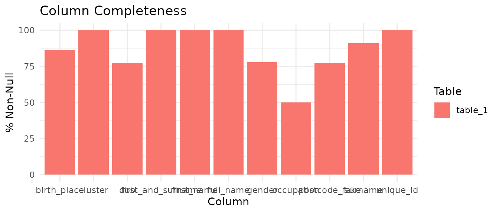
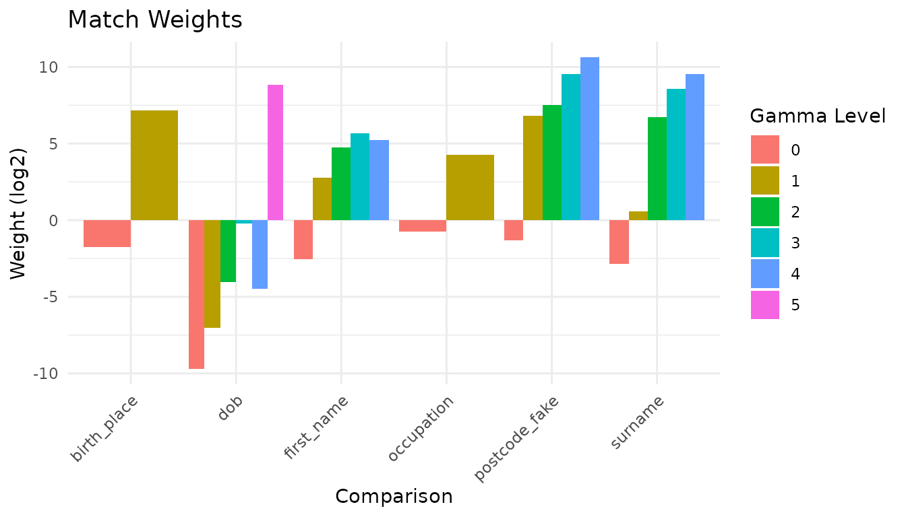
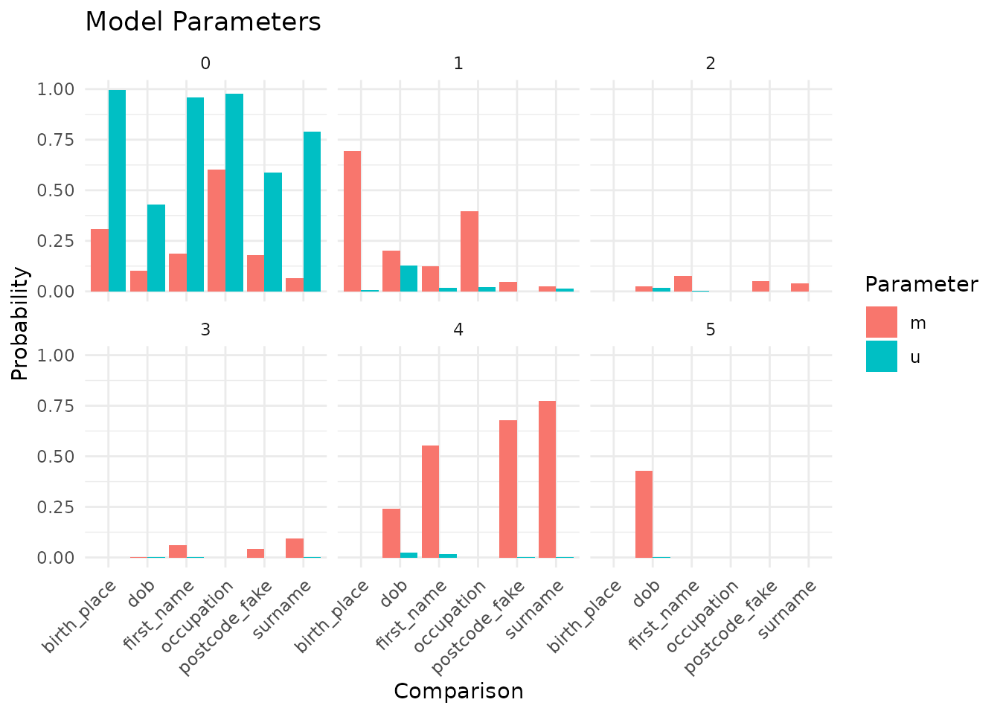
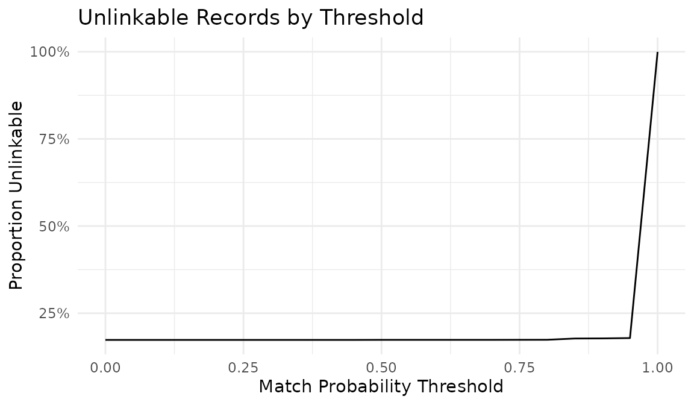
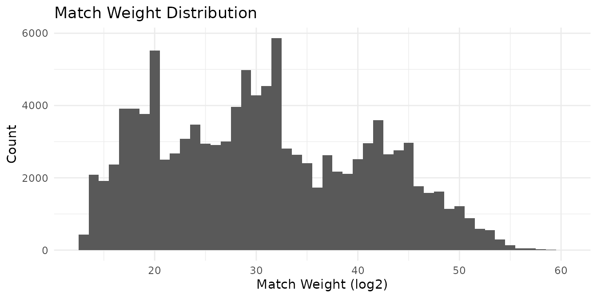
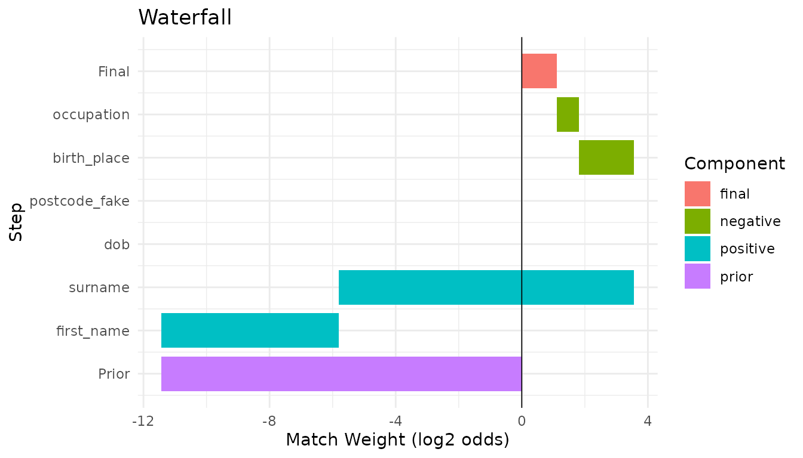
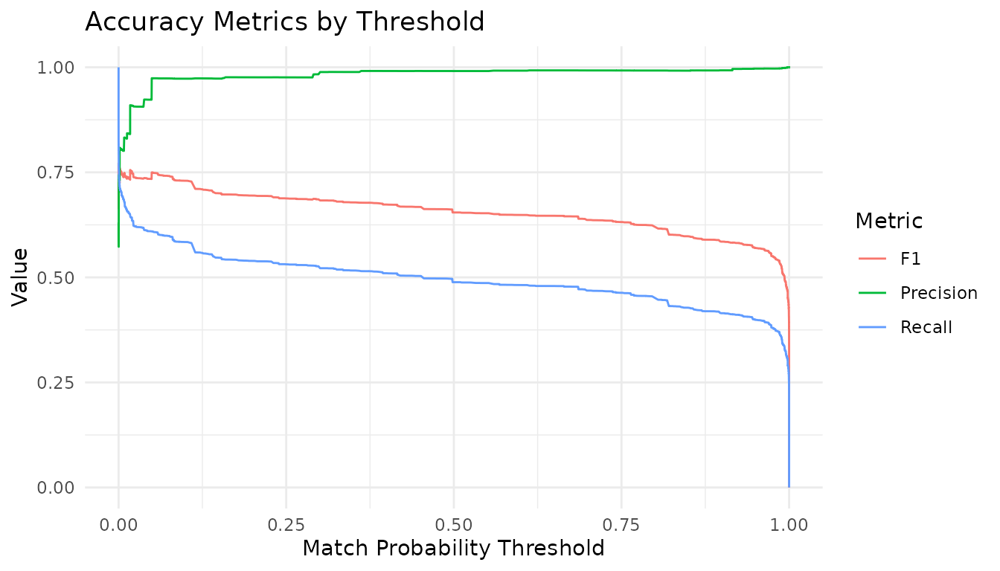
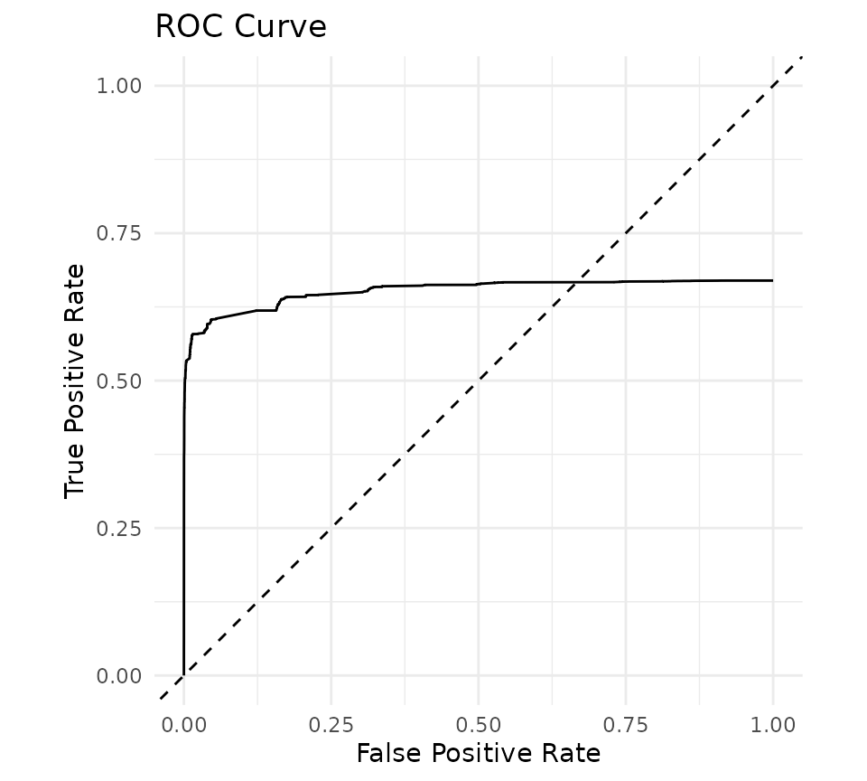
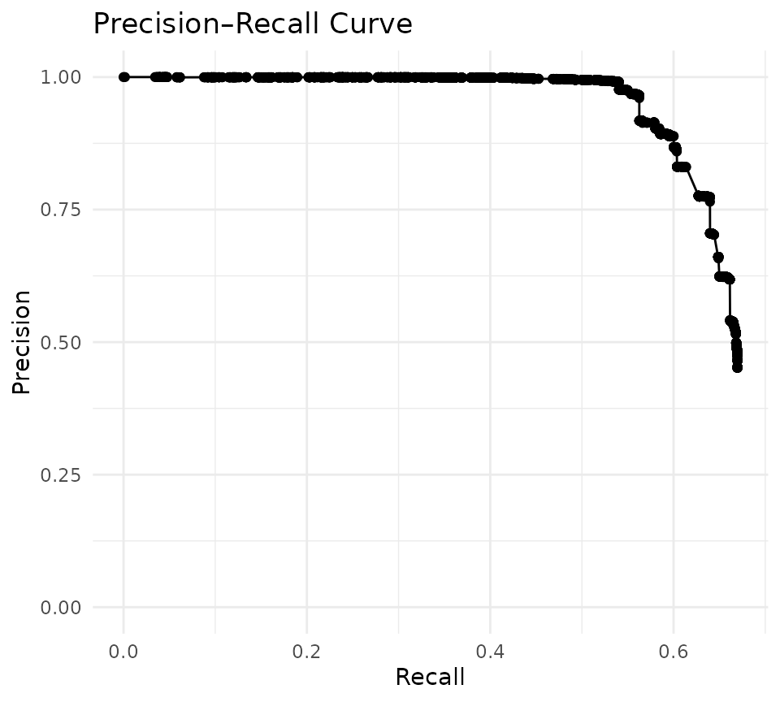

This vignette reproduces the Splink
“Deduplicate 50k synthetic” demo in irelink. The data
is based on historical people scraped from Wikidata and includes
duplicate records with realistic errors such as typos, missing values,
and swapped fields. The cluster column provides the
ground-truth entity labels used in evaluation.
This vignette requires nanoparquet to read the remote Parquet file and only compiles when the package and the data URL are both available.
Load the data
library(irelink)
#>
#> Attaching package: 'irelink'
#> The following object is masked from 'package:base':
#>
#> months
library(ggplot2)
df
#> # A data frame: 50,578 × 11
#> unique_id cluster full_name first_and_surname first_name surname dob
#> <chr> <chr> <chr> <chr> <chr> <chr> <chr>
#> 1 Q2296770-1 Q2296770 thomas cliff… thomas chudleigh thomas chudle… 1630…
#> 2 Q2296770-2 Q2296770 thomas of ch… thomas chudleigh thomas chudle… 1630…
#> 3 Q2296770-3 Q2296770 tom 1st baro… tom chudleigh tom chudle… 1630…
#> 4 Q2296770-4 Q2296770 thomas 1st c… thomas chudleigh thomas chudle… 1630…
#> 5 Q2296770-5 Q2296770 thomas cliff… thomas chudleigh thomas chudle… 1630…
#> 6 Q2296770-6 Q2296770 thomas cliff… thomas chudleigh thomas chudle… 1630…
#> 7 Q2296770-7 Q2296770 tom baron ch… tom chudleigh tom chudle… 1630…
#> 8 Q2296770-8 Q2296770 tom clifford… tom chudleigh tom chudle… NA
#> 9 Q2296770-9 Q2296770 thomas cliff… thomas chudleigh thomas chudle… 1630…
#> 10 Q2296770-10 Q2296770 thomas cliff… thomas chudleigh thomas chudle… NA
#> # ℹ 50,568 more rows
#> # ℹ 4 more variables: birth_place <chr>, postcode_fake <chr>, gender <chr>,
#> # occupation <chr>Profile the data
Use completeness and value distributions to choose blocking rules and comparisons:
con <- DBI::dbConnect(duckdb::duckdb())
#> duckdb keeps downloaded extensions and secrets in a temporary directory:
#> ℹ /tmp/RtmpP9mlrB/duckdb
#> This is removed when the R session ends.
#> • Extensions are re-downloaded each session.
#> • Secrets are lost.
#> ℹ Run duckdb(shared_home = TRUE) (or create ~/.duckdb) to keep them (suitable for most users).
#> ℹ Run duckdb(shared_home = FALSE) to accept the temporary directory (and silence this message).
#> ℹ See ?duckdb_storage for details and alternatives.
df |>
il_completeness(con = con) |>
autoplot()
il_profile(df, first_name, surname, dob, birth_place, con = con, top_n = 8)
#> # A tibble: 32 × 3
#> column value n
#> <chr> <chr> <dbl>
#> 1 first_name william 2780
#> 2 first_name john 2736
#> 3 first_name thomas 1448
#> 4 first_name george 1415
#> 5 first_name henry 1306
#> 6 first_name james 1265
#> 7 first_name sir 1262
#> 8 first_name charles 1216
#> 9 surname NA 4515
#> 10 surname baronet 615
#> # ℹ 22 more rowsChoose blocking rules
il_suggest_blocking(df, con = con)
#> # A tibble: 10 × 6
#> rule n_distinct coverage n_pairs pct_of_cartesian score
#> <chr> <int> <dbl> <int> <dbl> <dbl>
#> 1 cluster 5156 1 303961 0.0238 1.000
#> 2 full_name 25573 0.999 87973 0.0069 0.999
#> 3 first_and_surname 20479 0.999 262393 0.0205 0.998
#> 4 first_name 4413 0.999 16372982 1.28 0.986
#> 5 surname 6195 0.911 733085 0.0573 0.910
#> 6 birth_place 2373 0.863 4923790 0.385 0.860
#> 7 postcode_fake 12363 0.774 112172 0.0088 0.774
#> 8 dob 8985 0.774 1549081 0.121 0.774
#> 9 occupation 453 0.5 12573944 0.983 0.495
#> 10 gender 7 0.778 561648436 43.9 0.436The cumulative_pairs column shows the total number of
unique pairs produced so far:
il_count_pairs(
df,
block_on(surname, dob),
block_on(first_name, dob),
block_on(first_name, surname),
block_on(dob, birth_place),
con = con
)
#> # A tibble: 4 × 4
#> rule n_pairs cumulative_pairs pct_of_cartesian
#> <chr> <dbl> <dbl> <dbl>
#> 1 surname & dob 62893 62893 0.0049
#> 2 first_name & dob 67757 92798 0.0073
#> 3 first_name & surname 243656 298602 0.0233
#> 4 dob & birth_place 66657 314273 0.0246Define the specification
Apply term-frequency adjustment to birth_place and
occupation so common values such as “London” receive less
weight than rare ones:
spec <- il_spec() |>
il_compare(first_name, cl_name()) |>
il_compare(surname, cl_name()) |>
il_compare(dob, cl_dob()) |>
il_compare(postcode_fake, cl_postcode()) |>
il_compare(birth_place, cl_exact(term_frequency = TRUE)) |>
il_compare(occupation, cl_exact(term_frequency = TRUE)) |>
il_block_on(first_name ~ il_substr(1, 3), surname ~ il_substr(1, 4)) |>
il_block_on(surname, dob) |>
il_block_on(first_name, dob) |>
il_block_on(postcode_fake, first_name) |>
il_block_on(postcode_fake, surname) |>
il_block_on(dob, birth_place) |>
il_block_on(postcode_fake ~ il_substr(1, 3), dob) |>
il_block_on(postcode_fake ~ il_substr(1, 3), first_name) |>
il_block_on(postcode_fake ~ il_substr(1, 3), surname) |>
il_block_on(
first_name ~ il_substr(1, 2),
surname ~ il_substr(1, 2),
dob ~ il_substr(1, 4)
)
spec
#> Linkage Specification
#> Comparisons (6):
#> first_name : levels
#> surname : levels
#> dob : levels
#> postcode_fake : levels
#> birth_place : exact
#> occupation : exact
#> Blocking rules (10, OR-ed):
#> 1. first_name [il_substr(1,3)], surname [il_substr(1,4)]
#> 2. surname, dob
#> 3. first_name, dob
#> 4. postcode_fake, first_name
#> 5. postcode_fake, surname
#> 6. dob, birth_place
#> 7. postcode_fake [il_substr(1,3)], dob
#> 8. postcode_fake [il_substr(1,3)], first_name
#> 9. postcode_fake [il_substr(1,3)], surname
#> 10. first_name [il_substr(1,2)], surname [il_substr(1,2)], dob [il_substr(1,4)]Train the model
model <- df |>
il_model(spec = spec, con = con) |>
il_estimate_prior(
block_on(first_name, surname, dob),
block_on(dob, postcode_fake),
recall = 0.6
) |>
il_estimate_u(max_pairs = 5e6) |>
il_estimate_em(block_on(first_name, surname)) |>
il_estimate_em(block_on(dob))
#> EM trained: dob, postcode_fake, birth_place, and occupation | skipped (blocked
#> on): first_name and surname
#> EM trained: first_name, surname, postcode_fake, birth_place, and occupation |
#> skipped (blocked on): dobInspect the trained model
summary(model)
#> irelink Model
#> Status: Trained
#> Link type: dedupe
#> Records: 50578
#> Comparisons: 6
#> Blocking rules: 10
#>
#> Parameters:
#> prior: 0.0003629405
#> comparisons: # A tibble: 25 × 4
#> comparisons: comparison gamma_level m u
#> comparisons: <chr> <int> <dbl> <dbl>
#> comparisons: 1 first_name 0 0.177 0.963
#> comparisons: 2 first_name 1 0.123 0.0180
#> comparisons: 3 first_name 2 0.0772 0.00288
#> comparisons: 4 first_name 3 0.0628 0.00127
#> comparisons: 5 first_name 4 0.560 0.0152
#> comparisons: 6 surname 0 0.0572 0.981
#> comparisons: 7 surname 1 0.0224 0.0168
#> comparisons: 8 surname 2 0.0397 0.000430
#> comparisons: 9 surname 3 0.0951 0.000285
#> comparisons: 10 surname 4 0.785 0.00120
#> comparisons: # ℹ 15 more rows
#> u_estimation: 5e+06
#> u_estimation: FALSE
#> u_estimation: NULL
#> u_estimation: NULL
#> u_estimation: 5000000
#> u_estimation: 1
autoplot(model)
autoplot(model, type = 'parameters')
autoplot(il_unlinkables(model))
Predict
predictions <- predict(model, threshold = 0.5)
predictions
#> # A tibble: 220,801 × 13
#> unique_id_l unique_id_r gamma_first_name gamma_surname gamma_dob
#> * <chr> <chr> <int> <int> <int>
#> 1 Q6290114-13 Q6290114-9 3 4 -1
#> 2 Q1680868-13 Q1680868-9 2 4 0
#> 3 Q5076899-12 Q5076899-13 4 4 4
#> 4 Q1356587-5 Q1356587-8 4 4 -1
#> 5 Q19974912-1 Q19974912-5 4 4 4
#> 6 Q19974912-2 Q19974912-5 4 4 4
#> 7 Q19667410-12 Q19667410-7 4 4 4
#> 8 Q3132583-2 Q3132583-6 4 4 5
#> 9 Q5363074-2 Q5363074-5 4 4 4
#> 10 Q21464358-6 Q21464358-8 4 4 5
#> # ℹ 220,791 more rows
#> # ℹ 8 more variables: gamma_postcode_fake <int>, gamma_birth_place <int>,
#> # gamma_occupation <int>, match_weight <dbl>, tf_adj_birth_place <dbl>,
#> # tf_adj_occupation <dbl>, total_match_weight <dbl>, match_probability <dbl>
autoplot(predictions)
autoplot(predictions, which = 1)
Cluster
clusters <- il_cluster(predictions, threshold = 0.95)
clusters
#> # A tibble: 46,151 × 2
#> unique_id cluster_id
#> <chr> <chr>
#> 1 Q41752533-9 cluster_Q41752533-1
#> 2 Q6133323-18 cluster_Q6133323-1
#> 3 Q3289285-8 cluster_Q3289285-1
#> 4 Q37737959-3 cluster_Q37737959-1
#> 5 Q19038867-4 cluster_Q19038867-1
#> 6 Q19999567-2 cluster_Q19999567-1
#> 7 Q14945409-2 cluster_Q14945409-1
#> 8 Q522429-2 cluster_Q522429-1
#> 9 Q4786825-1 cluster_Q4786825-1
#> 10 Q5567104-6 cluster_Q5567104-1
#> # ℹ 46,141 more rowsEvaluate against ground truth
acc <- il_accuracy(model, labels_col = 'cluster')
acc
#> # A tibble: 3,524 × 16
#> threshold tp fp fn tn fn_blocking_miss precision recall f1
#> <dbl> <int> <int> <int> <int> <int> <dbl> <dbl> <dbl>
#> 1 0 203544 247197 100417 0 100417 0.452 0.670 0.539
#> 2 4.20e-9 203544 247197 100417 0 100417 0.452 0.670 0.539
#> 3 2.52e-8 203544 247157 100417 40 100417 0.452 0.670 0.539
#> 4 3.42e-8 203544 247114 100417 83 100417 0.452 0.670 0.539
#> 5 7.21e-8 203544 246732 100417 465 100417 0.452 0.670 0.540
#> 6 9.65e-8 203544 246732 100417 465 100417 0.452 0.670 0.540
#> 7 1.19e-7 203544 246683 100417 514 100417 0.452 0.670 0.540
#> 8 1.31e-7 203544 246682 100417 515 100417 0.452 0.670 0.540
#> 9 1.32e-7 203544 246682 100417 515 100417 0.452 0.670 0.540
#> 10 1.56e-7 203544 246682 100417 515 100417 0.452 0.670 0.540
#> # ℹ 3,514 more rows
#> # ℹ 7 more variables: f2 <dbl>, f0_5 <dbl>, specificity <dbl>, npv <dbl>,
#> # accuracy <dbl>, p4 <dbl>, phi <dbl>When you use labels_col, the evaluation derives all true
duplicate pairs from the ground-truth cluster column. Some true pairs
may never be generated by the blocking rules. Those pairs count as false
negatives at every threshold. As a result, the maximum recall in the
accuracy, ROC, and precision-recall plots is the blocking recall:
acc0 <- acc[acc$threshold == min(acc$threshold), ]
acc0$tp / (acc0$tp + acc0$fn)
#> [1] 0.6696385
autoplot(acc)

autoplot(il_precision_recall(model, labels_col = 'cluster'))
Error inspection
errors <- il_errors(model, labels_col = 'cluster', threshold = 0.999)
errors[errors$error_type == 'false_positive', ]
#> # A tibble: 128 × 6
#> unique_id_l unique_id_r match_weight match_probability true_label error_type
#> <chr> <chr> <dbl> <dbl> <lgl> <chr>
#> 1 Q15176618-8 Q8005070-4 22.8 1.000 FALSE false_posi…
#> 2 Q15176618-6 Q8005070-2 22.4 1.000 FALSE false_posi…
#> 3 Q3568485-2 Q3568487-2 38.9 1.000 FALSE false_posi…
#> 4 Q4088004-3 Q545038-1 22.6 1.000 FALSE false_posi…
#> 5 Q3568485-9 Q3568487-1 38.9 1.000 FALSE false_posi…
#> 6 Q18875129-4 Q6525430-8 25.0 1.000 FALSE false_posi…
#> 7 Q7528045-3 Q7528085-7 23.4 1.000 FALSE false_posi…
#> 8 Q7528045-6 Q7528085-7 26.0 1.000 FALSE false_posi…
#> 9 Q5583974-2 Q6130041-1 23.7 1.000 FALSE false_posi…
#> 10 Q28054162-6 Q6252444-19 23.7 1.000 FALSE false_posi…
#> # ℹ 118 more rowsSome false negatives occur because the true pair was never generated by any blocking rule:
errors <- il_errors(model, labels_col = 'cluster', threshold = 0.5)
errors[errors$error_type == 'false_negative', ]
#> # A tibble: 112,562 × 6
#> unique_id_l unique_id_r match_weight match_probability true_label error_type
#> <chr> <chr> <dbl> <dbl> <lgl> <chr>
#> 1 Q56676142-10 Q56676142-… 6.85 0.0402 TRUE false_neg…
#> 2 Q21288842-3 Q21288842-9 9.68 0.229 TRUE false_neg…
#> 3 Q18671149-14 Q18671149-… 9.68 0.229 TRUE false_neg…
#> 4 Q6131765-12 Q6131765-8 11.3 0.485 TRUE false_neg…
#> 5 Q24705361-18 Q24705361-6 11.3 0.485 TRUE false_neg…
#> 6 Q104534539-… Q104534539… -0.125 0.000333 TRUE false_neg…
#> 7 Q334201-11 Q334201-2 11.4 0.492 TRUE false_neg…
#> 8 Q7235250-3 Q7235250-4 10.1 0.286 TRUE false_neg…
#> 9 Q2421538-1 Q2421538-13 10.5 0.349 TRUE false_neg…
#> 10 Q4086743-3 Q4086743-6 9.96 0.266 TRUE false_neg…
#> # ℹ 112,552 more rowsCleanup
il_cleanup(model)
DBI::dbDisconnect(con, shutdown = TRUE)il_cleanup(model) is model-scoped. If an interactive run
failed before you kept the model object, call
il_cleanup_all(con) to remove all irelink
tables from the connection before disconnecting.